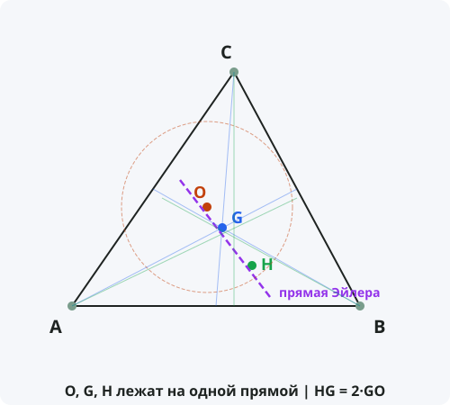

Прямая Эйлера
Формулировка
В любом треугольнике ортоцентр H, центроид G и центр описанной окружности O лежат на одной прямой, называемой прямой Эйлера. При этом центроид делит отрезок OH в отношении 2:1, считая от ортоцентра: HG = 2·GO.
Обозначения
Пусть дан треугольник ABC.
O — центр описанной окружности.
G — центроид (точка пересечения медиан).
H — ортоцентр (точка пересечения высот).
Тогда точки O, G, H лежат на одной прямой, причём:
HG = 2 · GO и OH = 3 · OG

Доказательство
Теорема доказана.
Свойства прямой Эйлера
- На прямой Эйлера лежат: центр описанной окружности O, центроид G, ортоцентр H, центр окружности девяти точек N.
- Центр окружности девяти точек N — середина отрезка OH.
- Расстояния: HG = 2·GO, OH = 3·OG, ON = NH.
- В равностороннем треугольнике все четыре точки совпадают, и прямая Эйлера не определена.
- В равнобедренном треугольнике прямая Эйлера совпадает с осью симметрии.
Следствия из теоремы
- Центр окружности девяти точек лежит на прямой Эйлера и является серединой отрезка OH.
- В любом треугольнике расстояние от ортоцентра до вершины вдвое больше расстояния от центра описанной окружности до противоположной стороны: AH = 2·OA₁.
- Прямая Эйлера проходит через центр описанной окружности, центроид и ортоцентр.
- Для любого треугольника (кроме равностороннего) прямая Эйлера единственна.
Примеры применения
Пример 1. В треугольнике ABC расстояние от ортоцентра H до центроида G равно 6. Найдите GO.
Решение: HG = 2·GO ⇒ 6 = 2·GO ⇒ GO = 3.
Пример 2. В треугольнике OH = 12. Найдите OG и GH.
Решение: OG = OH / 3 = 4. GH = 2·OG = 8.
Пример 3. Где находится прямая Эйлера в прямоугольном треугольнике?
Решение: В прямоугольном треугольнике ортоцентр H совпадает с вершиной прямого угла, центр описанной окружности O — середина гипотенузы. Прямая Эйлера — медиана к гипотенузе.
Историческая справка
Прямая Эйлера названа в честь великого швейцарского математика Леонарда Эйлера (1707–1783), который в 1765 году доказал, что в любом треугольнике ортоцентр, центроид и центр описанной окружности лежат на одной прямой.
Эйлер также установил, что центроид делит отрезок между ортоцентром и центром описанной окружности в отношении 2:1.
Позже было доказано, что на этой же прямой лежит и центр окружности девяти точек (открытой в XIX веке).
Интересные факты
- Прямая Эйлера — одна из самых известных линий в геометрии треугольника.
- В равностороннем треугольнике все замечательные точки совпадают, поэтому прямая Эйлера не определена.
- Существует обобщение прямой Эйлера для четырёхугольников и тетраэдров.
- На прямой Эйлера лежат и другие замечательные точки, например, точка пересечения прямых, соединяющих вершины с точками касания вневписанных окружностей.
- Прямая Эйлера используется в компьютерной графике для анализа и обработки треугольных сеток.